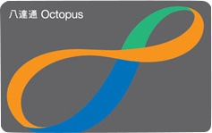

As you approach the turnstile, you fumble around for your Octopus Card.

The Octopus card is a reusable contactless stored value smart card for making electronic payments in online or offline systems in Hong Kong. It is most commonly used to pay for public transport (such as the MTR) convenience stores, supermarkets, and fast food restaurants.
You realize that you don't have enough money in your Octopus card. You have to add value to your card at a machine.

After adding 100 HKD into your card, you're able to enter the turnstile.